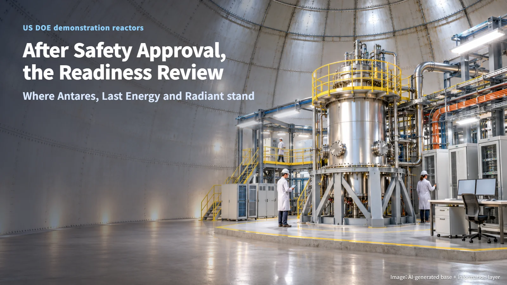
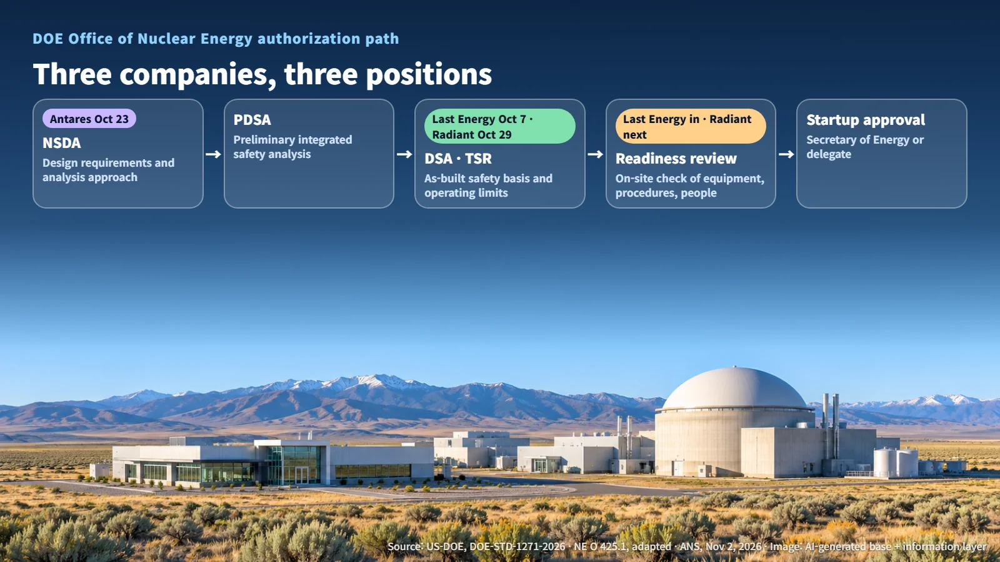
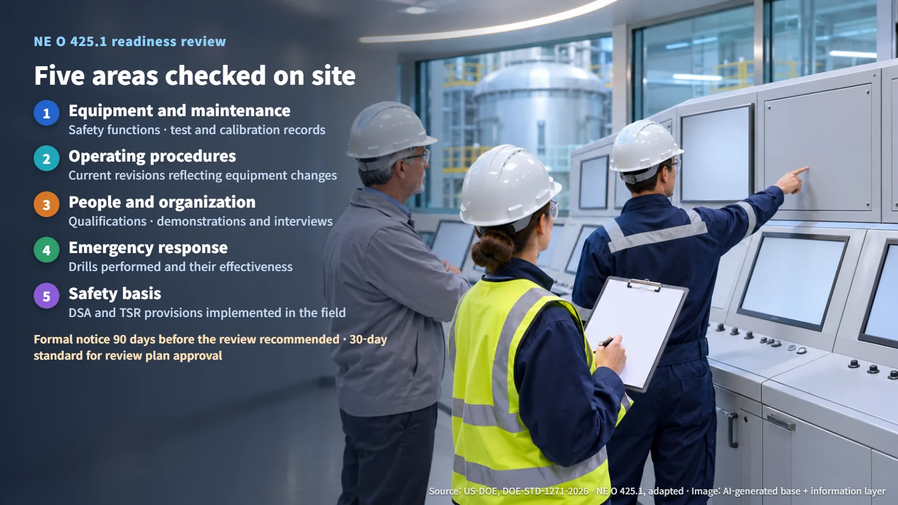

United States · Demonstration Reactors
After Safety Analysis Approval Comes the Readiness Review: The Steps Radiant and Last Energy Demonstration Reactors Pass Before Startup
Antares holds an NSDA approval while Last Energy and Radiant hold DSA approvals; the next gate is a DOE readiness review of equipment, procedures and people.
In October, three U.S. demonstration reactor projects announced safety approvals from the Department of Energy (DOE) one after another. It is tempting to read that news as a sign that the reactors are about to switch on. In practice, a reactor with an approved safety analysis still has a set of checks ahead of it before startup. This post follows DOE's published procedures step by step to show what those checks are.

Three Companies, Three Kinds of "DOE Approval"
On November 2, the American Nuclear Society (ANS) reported the October DOE authorization milestones of Antares, Last Energy and Radiant in a single article. The three companies are building different demonstration reactors, and each stands at a different stage.
- Antares: On October 23, the company announced approval of the Nuclear Safety Design Agreement (NSDA) for its Mark-1 reactor. The NSDA is the first step, setting the design requirements and safety analysis methods. Antares plans to pursue a power demonstration at Idaho National Laboratory (INL) in 2027.
- Last Energy: On October 7, the company announced approval of the Documented Safety Analysis (DSA) for its pilot reactor at Texas A&M–RELLIS, along with its entry into the readiness review (RR).
- Radiant: On October 29, the company announced DSA approval for Kaleidos and named the readiness review as its next step.
All three carry the label "DOE approval," yet Antares is at the starting line of design, while the other two are at the gate of the readiness review. The name of the approved document tells you how far a project has come.

From Design Agreement to Operating Limits: The Safety Basis Document Chain
The DOE standard DOE-STD-1271-2026 (dated September 2026 on its cover) links design, safety analysis and operation into a single pathway for nuclear facilities authorized by the Office of Nuclear Energy (NE). The full texts of the two projects' individual agreements and approval letters remain unpublished, so the explanation below follows the public NE procedure.
1. NSDA: The parties agree on applicable requirements, analysis methods, document formats and how regulatory interactions will work. The list of reference documents used for design and verification, the Code of Record, is managed from this point onward. 2. PDSA (Preliminary Documented Safety Analysis): The safety analysis is integrated during preliminary design, and equipment performance requirements are set. 3. DSA and TSR (Technical Safety Requirements): The safety basis reflecting the as-built facility is finalized, together with its operating limits. 4. RR and startup authorization: The readiness of people, equipment and procedures is confirmed, and findings are closed out.
The DSA is the blueprint of safety. It records which hazards and accidents the facility could face, what prevents and mitigates them, and within what bounds the facility must operate. Once DSA approval settles the safety case on paper, the question shifts to whether that case has been built into the facility as written.
What the Readiness Review Checks on Site
The readiness review follows directive NE O 425.1. For facilities within its scope, this directive takes over the role of the earlier DOE O 425.1E. The review plan (RP) covers the scope, the equipment under review, safety management programs, prerequisites, and field demonstrations, interviews and drills. A review can also be split by activity, for example fuel receipt, fuel storage and fuel loading. The directive recommends formal notification 90 days before the review begins and sets a 30-day standard for DOE approval of the review plan.
The review team looks at five broad areas:
- Equipment and maintenance: safety functions, plus test and calibration records
- Operating procedures: current revisions that reflect equipment changes
- Personnel and organization: qualifications, demonstrations and interviews
- Emergency response: drills performed and their effectiveness
- Safety basis: on-site implementation of DSA and TSR provisions
The concept tying these together is configuration management, the work of keeping three things aligned: design requirements, the physical equipment and the documentation. Every change within the review scope must either be completed and closed, or carry an evaluation showing that safe startup remains unaffected. Open maintenance items also undergo an operational impact evaluation. If the DSA defines what must be protected, the readiness review asks whether the people, equipment and procedures are ready to protect it.
